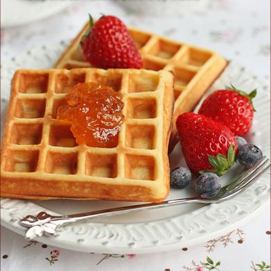

Twetter Bootstrap 网格例子
一行 12 个单元长度，可以分为 6 份

12 个基本单元格长度，也可以分为 12 份
Fontend Development:
HTML4.0, XHTML1.0, CSS2.1, HTML5, CSS3, JavaScript
Backend Developemt:
PHP, Ruby, Python, Java, ASP.NET, SCALA
Database Management:
SQL, MySQL POstgreSQL, NoSQL, MongoDB
APIs, Tools and Tips:
Google Plus API, Twitter Bootstrap, JSON, Firebug, WebPNG
默认栅格系统 响应式的12列系统

做为框架默认的一部分，Bootstrap提供了940px宽, 12列的栅格系统。
针对各种不同的设备和分辨率，Bootstrap提供了四种响应式方案：手机，垂直平板，水平平板/小型桌面，宽屏桌面。
<div class="row">
<div class="span4">...</div>
<div class="span8">...</div>
</div>
如左，一个基本的布局由两个“列”组成，栅格系统由一系列横跨12等分的"span*"组成。
列的偏移
<div class="row">
<div class="span4">...</div>
<div class="span4 offset4">...</div>
</div>
列的内嵌
在Bootstrap中使用静态(non-fluid)栅格很容易实现内嵌，
只要在一个已存在的 .span* 列中，嵌套一个新的 .row 列，然后在 .row 列中再添加一组 .span* 列即可。
例子
内嵌的行应该包含多个列，行的 span* 应该是几个内嵌列 span* 之和。
例如，两个内嵌的 .span3 列应该包含在 .span6 列中。
<div class="row">
<div class="span12">
Level 1 of column
<div class="row">
<div class="span6">Level 2</div>
<div class="span6">Level 2</div>
</div>
</div>
</div>
流式栅格系统 基本于百分比的12列响应式布局
列的流式排布
基于百分比，而非像素
流式栅格系统中的列宽使用百分比计算宽度而非像素。与像素栅格布局一样，Bootstrap根据设备和分辨率不同提供了不同的响应性方案。
行的流式布局
把固定布局变成流式布局很简单，把 .row 变成 .row-fluid 即可，列内容不变，因此在流式布局和固定布局之间转换非常简单。
补充
<div class="row-fluid"> <div class="span4">...</div> <div class="span8">...</div> </div>
流式列的内嵌
流式列的内嵌稍稍有点不同：内嵌列的宽度与父级无关，而要视兄弟列而定，因为所有的内嵌列都是按比例分配父列的100%宽度。
<div class="row-fluid">
<div class="span12">
Level 1 of column
<div class="row-fluid">
<div class="span6">Level 2</div>
<div class="span6">Level 2</div>
</div>
</div>
</div>
自定义栅格
| 变量 | 默认值 | 描述 |
|---|---|---|
@gridColumns |
12 | 列的数量 |
@gridColumnWidth |
60px | 每列的宽度 |
@gridGutterWidth |
20px | 列之间的间隔宽度 |
@siteWidth |
计算所有列的总宽度（含间隔） | 计算列的总宽度以设置 .container-fixed() 的宽度 |
LESS中的变量
Bootstrap内置了一组很有用的变量，用以定制上述的默认940px栅格系统。这些变量保存在variables.less中。
如何定制
修改栅格意味着改变三个 @grid* 变量并要重新编译Bootstrap。
改变variables.less中的栅格变量，再使用四种方式中的某一种重编译less。
在添加更多列之前，要先在grid.less在定义这三个变量。
保持响应性
定制的栅格只能工作在默认的940px下，若要保证Bootstrap的全面响应性，还得更改responsive.less中的栅格内容。
布局 用基础模板创建网页
固定布局
用 <div class="container"> 实现的简单的中央布局的页面，默认为940px宽。
<body>
<div class="container">
...
</div>
</body>
流式布局
<div class="container-fluid"> 提供灵活的页面结构，定义了最小和最大宽度，拥有一个左边栏。很适合做应用和文档。
<div class="container-fluid">
<div class="row-fluid">
<div class="span2">
<!--Sidebar content-->
</div>
<div class="span10">
<!--Body content-->
</div>
</div>
</div>
响应式设计 Media Query根据设备和分辨率的不同而使用不同样式

响应式设计用来做什么？
Medias Query允许浏览器基于不同的条件而使用不同的CSS：比如宽高比，宽度，显示类型等等。但最常用的条件还是 min-width 和 max-width 。
- 在栅格中修改列的宽度
- 堆叠元素，而不是让其浮动
- 根据不同设备重置标题和文字的大小，以获得更好的阅读体验。
谨慎地使用media query，建议仅仅将其做为你的手机用户的初体验。对于大型项目而言，最好还是选择专业的代码库，而不是进行层层的media查询。
支持的设备
Bootstrap在responsive.less文件中提供了一组media query，令你的项目可以更为便捷地适应多种设备和分辨率。包括：
| 设备 | 布局宽度 | 列宽度 | 间隔宽度 |
|---|---|---|---|
| 智能手机 | <=480px | 流式列，非固定宽度 | |
| 智能手机到垂直平板 | <=767px | 流式列，非固定宽度 | |
| 水平平板 | >=768px | 42px | 20px |
| 默认 | >=980px | 60px | 20px |
| 大分辨率 | >=1200px | 70px | 30px |
要求有meta标签
要确保设备能正常显示响应式页面，就要添加meat标签
<meta name="viewport" content="width=device-width, initial-scale=1.0">
使用media query
Bootstrap不会自动包含media query，但理解和添加media query却是非常容易。 如下这般，即可在Bootstrap中包含响应式特性:
- 使用编译后的bootstrap-responsive.css
- 添加 @import "responsive.less" ，然后重新编译Bootstrap
- 修改并重编译responsive.less为一个单独的文件
为什么不直接包含它呢? 说实话，并不是什么应用都需要响应性设计，响应性不是必须的。 与其让开发者移除这个特性，不如由我们动手。
// 水平状态的手机及以下
@media (max-width: 480px) { ... }
// 界于水平手机与竖直平板之间
@media (max-width: 768px) { ... }
// 界于竖直平板与水平平板/桌面之间
@media (min-width: 768px) and (max-width: 980px) { ... }
// 宽桌面
@media (min-width: 1200px) { .. }
用于响应性的实用类
介绍
为了更高效友好地面向手机开发，可以使用这些基础实用类根据设备的不同决定内容的显示或隐藏。
何时适用
你的网站已经有了一点底子，但并不想再为不同设备而重新创建一个完全不同的站点，这种情况就适合使用实用类来完善呈现效果。
例如，你仅仅想在使用手机浏览时显示 <select> 做为导航，而在使用平板和桌面浏览时，就隐藏起来。
支持的类
下面展示了可用的类，及其在media query（由设备标识）下的效果。
这些类保存在 responsive.less 。
| 类 | 手机 <=480px | 平板 <=767px | 桌面 >=768px |
|---|---|---|---|
.visible-phone |
显示 | 隐藏 | 隐藏 |
.visible-tablet |
隐藏 | 显示 | 隐藏 |
.visible-desktop |
隐藏 | 隐藏 | 显示 |
.hidden-phone |
隐藏 | 显示 | 显示 |
.hidden-tablet |
显示 | 隐藏 | 显示 |
.hidden-desktop |
显示 | 显示 | 隐藏 |
测试案例
改变你的浏览器尺寸，或是不在同的设备上浏览，以观察上述类的效果。
显示...
- 手机✔ 手机
- 平板✔ 平板
- 桌面✔ 桌面